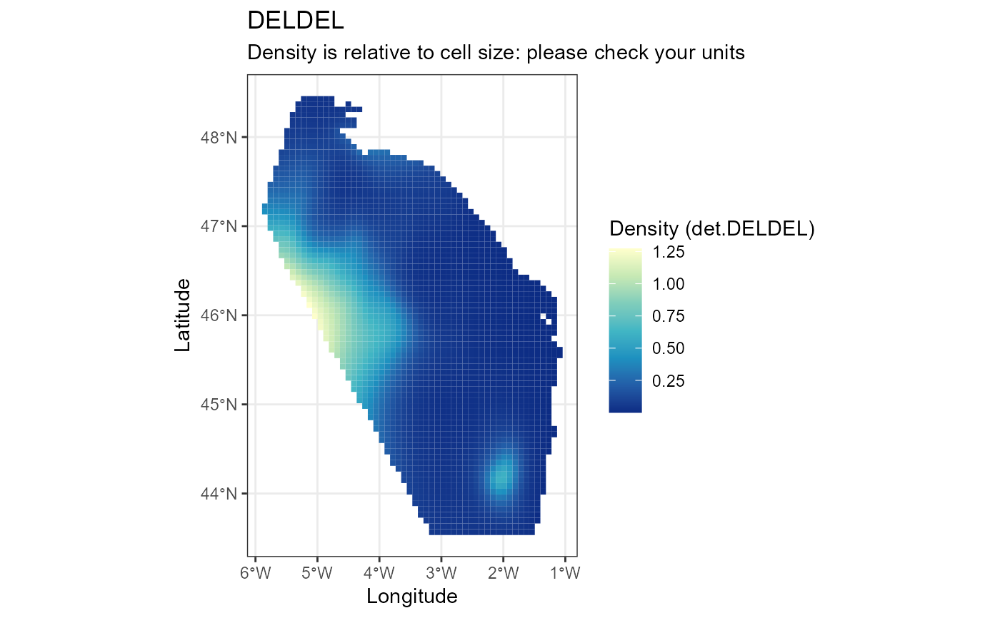

Fit and Predict distribution
fit_and_predict.RdThis function fits and predicts distribution species for MEGASCOPE surveys.
Usage
fit_and_predict(
effort_table,
response_y,
family,
knots,
bound,
species,
prediction_grid = NULL,
covariates_x = NULL,
save = "."
)Arguments
- effort_table
sf dataframe. SF object produce in the pelascope workflow.
- response_y
character. The column of interest to consider as response in the gam (ex:ind.FULGLA or det.FULGLA)
- family
character. "nb" /" tw". Family distribution in the model.
- knots
data.frame 'knots' data.frame produces with create_soap function
- bound
list 'bound' list produce with create_soap function
- species
character. Species to consider, must be written in capital in the same way than the dataset (ex:DELDEL)
- prediction_grid
sf object. NULL by default and generated from effort_table (10kmx10km). Grid of the the area to be used if needed. If variable is true, prediction grid must be provide.
- covariates_x
character. NULL by default. Variables in effort_table to be considered in the fitting.
- save
character. Path giving the place to save all output. If NULL it doe not save.
Examples
fit_and_predict(effort_table = data_effort_esw,
response_y = "det.DELDEL",
family = "nb",
knots = knots_bound$knots,
bound = knots_bound$bound,
species = "DELDEL",
prediction_grid = NULL,
covariates_x = NULL,
save = NULL)
#>
#> ── Start fitting ───────────────────────────────────────────────────────────────
#>
#> ── Create predict table ──
#>
#> Predict table is created based on effort table.
#> ── Fitting gam ──
#>
#>
#> Family: Negative Binomial(0.402)
#> Link function: log
#>
#> Formula:
#> get(response_y) ~ 1 + s(lon, lat, bs = "so", xt = list(bnd = bound))
#>
#> Estimated degrees of freedom:
#> 26.1 total = 27.14
#>
#> REML score: 409.4854
#> ── Make prediction ─────────────────────────────────────────────────────────────
#> Beware of units for density surface.
#> DELDEL has a mean density at 0.178 with min= 0 and max= 1.272.
#> $model_data
#>
#> Family: Negative Binomial(0.402)
#> Link function: log
#>
#> Formula:
#> get(response_y) ~ 1 + s(lon, lat, bs = "so", xt = list(bnd = bound))
#>
#> Estimated degrees of freedom:
#> 26.1 total = 27.14
#>
#> REML score: 409.4854
#>
#> $output_map
#>
#> $prediction_map

#>
#> $data_predict
#> Simple feature collection with 2483 features and 3 fields
#> Geometry type: POLYGON
#> Dimension: XY
#> Bounding box: xmin: -5.894158 ymin: 43.53386 xmax: -1.043256 ymax: 48.45917
#> Geodetic CRS: WGS 84
#> First 10 features:
#> Density SE Species geometry
#> 2 0.03706790 0.03521315 DELDEL POLYGON ((-5.265338 48.4591...
#> 3 0.03531926 0.03249101 DELDEL POLYGON ((-5.175506 48.4591...
#> 4 0.03377218 0.03050635 DELDEL POLYGON ((-5.085675 48.4591...
#> 5 0.03275919 0.02932575 DELDEL POLYGON ((-4.995843 48.4591...
#> 6 0.03234298 0.02890461 DELDEL POLYGON ((-4.906011 48.4591...
#> 7 0.03193600 0.02919862 DELDEL POLYGON ((-4.81618 48.45917...
#> 9 0.04214810 0.03891133 DELDEL POLYGON ((-5.355169 48.3995...
#> 10 0.03969739 0.03515484 DELDEL POLYGON ((-5.265338 48.3995...
#> 11 0.03777341 0.03201557 DELDEL POLYGON ((-5.175506 48.3995...
#> 12 0.03619948 0.02971869 DELDEL POLYGON ((-5.085675 48.3995...
#>
#> $data_fit
#> Simple feature collection with 433 features and 18 fields
#> Geometry type: POINT
#> Dimension: XY
#> Bounding box: xmin: -5.657199 ymin: 43.66589 xmax: -1.23514 ymax: 48.31294
#> Geodetic CRS: WGS 84
#> # A tibble: 433 × 19
#> Beaufort TransectID plateform n_obs LegID Start_time
#> <fct> <chr> <chr> <dbl> <chr> <dttm>
#> 1 1 TR_Pelgas_04052023 upper_bridge_out… 2 0405… 2023-05-04 11:42:53
#> 2 1 TR_Pelgas_04052023 upper_bridge_out… 2 0405… 2023-05-04 11:42:53
#> 3 1 TR_Pelgas_05052023 upper_bridge_out… 2 0505… 2023-05-05 13:56:44
#> 4 1 TR_Pelgas_05052023 upper_bridge_out… 2 0505… 2023-05-05 13:56:44
#> 5 1 TR_Pelgas_05052023 upper_bridge_out… 2 0505… 2023-05-05 13:56:44
#> 6 1 TR_Pelgas_05052023 upper_bridge_out… 2 0505… 2023-05-05 13:56:44
#> 7 1 TR_Pelgas_18052023 upper_bridge_out… 2 1805… 2023-05-18 13:00:34
#> 8 1 TR_Pelgas_22052023 upper_bridge_out… 2 2205… 2023-05-22 15:03:10
#> 9 1 TR_Pelgas_27052023 upper_bridge_out… 2 2705… 2023-05-27 13:24:10
#> 10 2 TR_Pelgas_01052023 upper_bridge_out… 2 0105… 2023-05-01 06:56:56
#> # ℹ 423 more rows
#> # ℹ 13 more variables: DateTime <dttm>, End_time <dttm>, SegID <chr>,
#> # Effort <dbl>, geometry <POINT [°]>, det.DELDEL <int>, ind.DELDEL <int>,
#> # mean_esw_DELDEL <dbl>, sd_esw_DELDEL <dbl>, Q25_esw_DELDEL <dbl>,
#> # Q75_esw_DELDEL <dbl>, lon <dbl>, lat <dbl>
#>